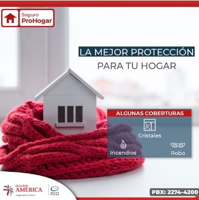

|
INICIO
|
INFORMACIÓN CORPORATIVA
|
CONTÁCTANOS
|
PRODUCTOS
|
INFORMACIÓN DE PRIVACIDAD
|
TERMINOS DE CONDICIÓN
|
PREGUNTAS DE LOS CLIENTES
|
¿Cuales son los contactos de la empresa?
Nuestros contactos son:
Tel:📞
NIC.NUMERO.324-345-45.
Ubicación 💢:
Centro Pellas. Km. 4 1/2 Carretera Masaya.
Horarios 🕖:
Sábado 8:30 AM - 11:30 AM
¿QUIÉNES SOMOS?
Somos una compañía de seguros autorizada por la Superintendencia de Bancos y Otras Instituciones Financieras (SIBOIF) desde 1997 para emitir Seguros Patrimoniales, Seguros de Personas y Fianzas. Asumiendo riesgos prudentemente, nos permite mantener relaciones estables con Compañías Reaseguradoras líderes en el mercado internacional de reaseguro. De esta manera nuestros clientes reciben un excelente servicio y perciben solidez y confianza y así contribuimos significativamente al bienestar social y económico de los nicaragüenses, nuestro personal y accionistas.
MISIÓN DE SEGUROS AMÉRICA:
Somos una Compañía de seguros que asume prudentemente los riesgos a que están expuestos la comunidad y sus bienes en Nicaragua. Hacemos esto fundamentados en la más estricta buena fe y en un equipo de profesionales altamente motivados, eficientes y creativos infundidos de un alto espíritu de compromiso con nuestros clientes y la comunidad, respaldados por inversionistas de reconocida solvencia económica y moral, y de las empresas reaseguradoras más sólidas del mundo..
VISIÓN DE SEGUROS AMÉRICA:
Nuestro propósito es ser la compañía de seguros líder en el mercado nicaragüense en los segmentos de seguros personales y empresariales, con una clientela altamente satisfecha del servicio que recibe y de la seguridad, solidez y confianza que le ofrecemos. Logramos este propósito con el apoyo decidido de un personal altamente calificado y profesional; aliados con las empresas reaseguradoras más sólidas del mundo; y con el prestigio, solvencia económica y moral de nuestros accionistas. De esta forma satisfacemos las necesidades de protección de la comunidad nicaragüense, ofrecemos oportunidades de trabajo estimulantes y bien renumeradas a nuestro personal, llenamos las expectativas económicas y sociales de los accionistas y contribuimos al resurgimiento socioeconómico de Nicaragua.
